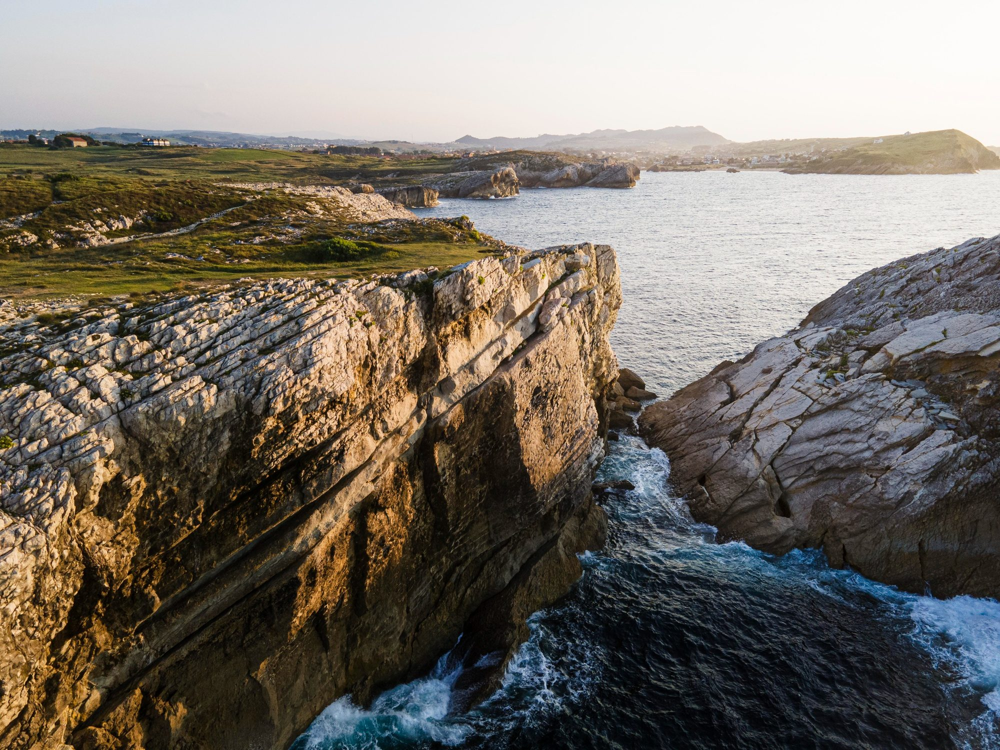

La más pedida
Lagos del Norte
Milán, Como, Bellagio y Verona. Traslados privados entre lagos, dos noches en una casa sobre el agua y dos días enteros sin plan.
USD 3.480por persona
Ver el itinerario
Viajes a medida · desde 2009
Nosotros lo hacemos posible. Sin paquetes, sin grupos, sin un solo día que no hayas elegido.
Seleccionados del mes
Ninguna es un paquete. Son itinerarios que salieron de una conversación y se ajustaron hasta el último día. Sirven de punto de partida, no de molde.
Milán, Como, Bellagio y Verona. Traslados privados entre lagos, dos noches en una casa sobre el agua y dos días enteros sin plan.

Lisboa, Comporta y la costa alentejana. Coche propio y tres casas, una por tramo.
Kioto, Nara y la isla de Kyushu en tren. Dieciséis días sin un solo madrugón obligado.
Cómo trabajamos
No hay formulario que reemplace media hora hablando de qué quieres y qué no. Después de eso, todo lo demás es trabajo nuestro.
Media hora, por videollamada o en la oficina. Hablamos de ritmo, de presupuesto y de lo que no quieres ni ver.
Sin compromiso · 30 minutosEn tres días te llega un itinerario completo, día por día, con precios cerrados y alternativas donde las hay.
72 horas despuésSe cambia lo que haga falta, las veces que haga falta. La mayoría de los viajes se cierran en la segunda versión.
Las vueltas que hagan faltaUna semana antes de salir te llega el cuaderno de viaje: reservas, mapas, horarios y a quién llamar si algo se tuerce.
Impreso y en el teléfonoUn itinerario abierto
Así se ve un viaje nuestro antes de salir. Este es el que más veces hemos armado, y cada vez fue distinto: esta es la versión de una pareja que viajó en mayo.
Recogida en el aeropuerto. Tarde libre y cena reservada en Brera.
La Última Cena a las 9, con entrada reservada desde hace tres meses. Resto del día sin plan.
Una hora de coche. Llegada a media mañana y el funicular a Brunate antes de comer.
El coche va por tierra con el equipaje; ustedes van por agua. Dos horas de lago.
Día libre. Sugerimos Villa Melzi por la mañana y nada por la tarde.
Varenna y Villa Monastero en barco. Cena en Bellagio en un sitio que no está en ninguna guía.
Tres horas de coche con parada en Bérgamo alta para comer.
Las grutas de Catulo temprano, antes del calor. Tarde en el lago.
Cuarenta minutos de coche. Verona entera se hace a pie, y así está pensado el día.
Ópera en la Arena si hay temporada; si no, cena larga y paseo. Las entradas ya están.
Día libre. Valpolicella con conductor si apetece, sin conductor si no.
Dos horas de coche. Salida de la casa a la hora que haga falta, y ni un minuto antes.
Este es el punto de partida. A partir de aquí, rediseñamos el itinerario a tu gusto: cambia lo que quieras, las veces que haga falta.
Pedir este itinerario como baseSin letra chica
Lo escribimos así de claro porque es lo primero que todo el mundo pregunta y lo último que la mayoría de las agencias contesta.
Quién viaja con nosotros
Pedimos un viaje sin madrugones y sin museos. Nos armaron doce días sin uno solo de los dos, y aun así vimos más de lo que esperábamos.
Cambiamos el itinerario cuatro veces. La cuarta era la buena, y nadie nos hizo sentir que estábamos molestando. Con dos niños, eso vale oro.
Viajé sola por primera vez. El cuaderno de viaje lo tenía todo, hasta el número de andén del tren de Nagasaki.
Lo que más agradecí fue la respuesta a las once de la noche cuando perdimos un tren. En diez minutos teníamos otro y el hotel avisado.
Fuimos con mis padres, de setenta y tantos. Cada día tenía una versión con menos caminata por si hacía falta. La usamos dos veces.
La primera videollamada fue media hora hablando de comida. Después entendí por qué: no hubo una sola cena mal elegida en nueve días.
Preguntas
Nada, hasta que decides viajar. La conversación y el borrador son gratis. Si el viaje sale, el trabajo está incluido en el precio; si no sale, no se cobra.
Tres meses es lo cómodo. Con menos también se puede, pero algunas entradas —la Última Cena, la Arena de Verona— se agotan antes y habría que buscar alternativas.
Sí. Hay alguien de guardia todos los días del viaje. Lo que se pueda cambiar sin coste se cambia; lo que tenga coste se consulta antes.
Con casi cualquiera. Lo que no hacemos es viajes de menos de siete días ni viajes de grupo abierto. Todo lo demás se conversa.
Hasta 48 horas antes se devuelve todo salvo las entradas nominativas ya emitidas. Con menos de 48 horas depende de cada proveedor, y lo peleamos uno por uno.
Empezar cuesta media hora
Aunque esté a medias. Sobre todo si está a medias: de eso se trata la conversación.